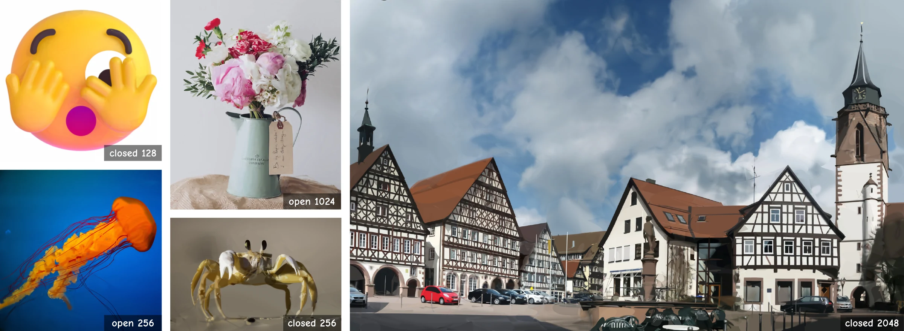

CubicSplat: Differentiable Vector Graphics via
Error-Bounded Forward Relaxation
ECCV 2026 Oral

Abstract
Vector graphics are prized for their resolution independence, compact storage, and direct editability, making differentiable optimization of their parametric primitives an attractive goal. Yet classical rasterization is discontinuous with respect to geometry, and existing remedies that smooth the forward pass demand increasingly elaborate heuristics as scene complexity grows. We trace this fragility to a gradient seesaw: design choices that improve forward geometric exactness can systematically degrade the induced gradient signal, and vice versa. To navigate this tension we introduce CubicSplat, a differentiable vector rasterizer that replaces Bézier closest-point solvers with uniform polyline surrogates whose geometric error is bounded at \(\mathcal{O}(S^{-2})\). The resulting static computation graph yields well-conditioned gradients by construction, while a compositing-derived visibility mechanism prunes degenerate primitives without auxiliary regularization. On DIV2K and Kodak benchmarks CubicSplat achieves state-of-the-art reconstruction quality with over 2 dB PSNR gain in the closed-fill setting, while training up to 4\(\times\) faster than prior methods.
Keywords: Differentiable rendering · Vector graphics · Scene representation · Gradient conditioning
Acknowledgements
This work was supported by grants from the National Natural Science Foundation of China (62525606, U25B2072) and Open Research Fund of Zhejiang Key Laboratory of Intelligent Education Technology and Application (No. 2025ZNJYKF006).